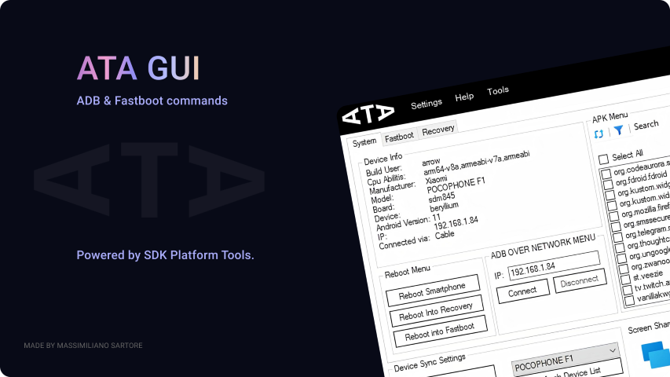
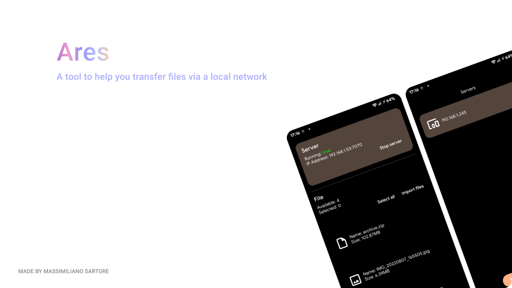
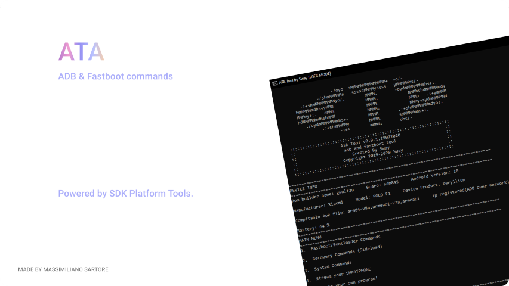
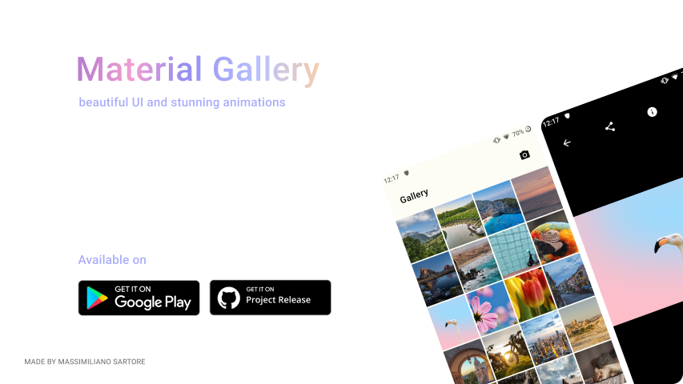

About
Hello and thank you for visiting my website. My name is Massimiliano Sartore and I am a software developer from Italy. I have a passion for mobile development and creating innovative solutions for different platforms. I have a solid foundation in software engineering and industry 4.0, as I graduated from ITS-ICT as a Higher technician in 2021. I am also pursuing a degree in computer science to expand my knowledge and skills in this field. I love learning new technologies and applying them to real-world challenges that can make a positive impact. On this website, you can find out more about me and my projects, as well as contact me if you are interested in working with me or collaborating on something exciting.
Projects
ATA GUI
ATA-GUI is an app that lets you perform advanced tasks on your Android device with ease. You can use ATA-GUI to access and modify your device's system settings and features. You can also use ATA-GUI to install, uninstall, and restore apps on your device. ATA-GUI is powered by SDK Platform Tools, which are a set of command-line tools that allow you to communicate with your device and execute various operations. ATA-GUI is the app for advanced Android users who want to have more control over their device.
Ares
Ares is an app that makes file sharing fast and convenient. You can use Ares to send and receive files from any device on your local network without using the internet. You can create your own server or join others with a simple scan. You can also access the server from your app or browser and upload files with ease. Ares is the app for file sharing via local network.
ATA
ATA is an app that allows you to perform advanced tasks on your Android device using a shell interface. You can use ATA to access and modify your device's system settings, files, and features. You can also use ATA to install, uninstall, and restore apps on your device. ATA is powered by SDK Platform Tools, which are a set of command-line tools that allow you to communicate with your device and execute various operations. ATA is available for Linux and Windows, and is the app for advanced Android users who want to have more control over their device using a shell.
Material Gallery
Material Gallery is a project for Android that aims to be up to date with the latest Material guidelines with beautiful UI and stunning animations
Contact
I'm currently available to get involved in new projects, so get in touch if you'd like to work together.Simply email me at massimiliano.sartore@pm.me and let's talk about your project!